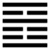

Hỏa Lôi Phệ Hạp (噬嗑 shì kè)
Phệ là cắn, là trừ (sự ngăn cách), hạp là hợp.
Thoán từ:
噬嗑: 亨, 利用獄．
Phệ hạp: Hanh, lợi dụng ngục.
Dịch: Căn để hợp lại, như vậy là hanh thông; dùng vào việc hình ngục thì có lợi.
Giảng: Quẻ Phệ hạp này nói về việc hình ngục.
Hào sơ và hào trên cùng là hai vạch liền, tượng như hàm trên và hàm dưới; ở giữa có ba vạch đứt, là miệng há ra; xen vào một vạch liền như một cái quẻ cản ngang miệng, làm gián cách hai hàm răng; Phải cắn gãy, trừ nó đi rồi hai hàm mới hợp với nhau được.
Trong xã hội, kẻ gián cách đó là bọn gian tà, sàm nịnh bưng bít kẻ trên người dưới mà trên không thông tới dưới, dưới không đạt tới trên. Cho nên phải dùng hình ngục để trừ chúng.
Hình ngục muốn có kết quả thì phải vừa uy, vừa sáng suốt. Nội quái Chấn là uy; ngoại quái Ly là sáng suốt.
Lại xét riêng hào 5, hào làm chủ trong quẻ; nó ở ngôi cao, âm nhu mà đắc trung, là có ý khuyên dùng hình ngục tuy phải uy, phải cương, nhưng vẫn nên có một chút nhu, hiếu sinh; nếu chỉ cương thôi thì hóa ra tàn khốc, hiếu sát mất.
Đó là đại ý Thoán truyện. Đại tượng truyện bảo tiên vương theo ý nghĩa quẻ Phệ hạp này mà làm sáng tỏ sự trừng phạt và răn bảo bằng pháp luật. (Tiên vương dĩ minh phạt, sắc pháp: 先王以明罰, 敕法 cũng có người hiểu là sắp đặt pháp luật hoặc ban bố pháp luật)
Ý nghĩa các hào :
1.
初九: 屨校滅趾, 无咎．
Sơ cửu: Lí giảo diệt chỉ, vô cữu.
Dịch: Hào 1, dương : ví như chân đạp vào cái cùm mà đứt ngón chân cái, không có lỗi lớn.
Giảng: Trong quẻ này hào 1 và hào trên cùng là người không có chức vị, bị chịu hình; còn 4 hào kia là người có chức vị áp dụng hình pháp.
Hào 1 ở dưới cùng là hạng dân thường, mới làm bậy mà bị tội nhẹ (cùm chân, chặt ngón chân cái) thì sẽ sợ phép nước mà sau không làm điều ác nữa, cho nên không có lỗi lớn.
2.
六二: 噬膚, 滅鼻, 无咎．
Lục nhị: Phệ phu, diệt tị, vô cữu.
Dịch: Hào 2, âm: Cắn miếng thịt mềm, sứt cái mũi, không có lỗi.
Giảng: hào này cũng như ba hào sau, dùng chữ phệ (cắn) để trỏ người dùng hình pháp.
Hào 2 âm nhu đắc trung, chính lại được hào 5 ứng, tức là người được vua ủy cho quyền hình pháp, vì vậy dễ thu phục được kẻ có tội, công việc dễ như cắn miếng thịt mềm. Nhưng vì hào 2 cưỡi lên hào 1 dương cương, tức như gặp kẻ ương ngạnh, nên phải cưỡi lên hào 1 dương cương, tức như gặp kẻ ương ngạnh, nên phải quá tay một chút, kẻ bị tội chịu hình phạt khá đau, như bị cắn vào mũi, đó là lỗi của hắn chứ hào 2 vẫn là trung chính, không có lỗi.
3.
六三: 噬腊肉, 遇毒, 小吝, 无咎．
Lục tam: Phệ tích nhục, ngộ độc, tiểu lận, vô cữu.
Dịch: Hào 3, âm: Cắn phải miếng thịt có xương lại ngộ độc, đáng ân hận một chút, nhưng không có lỗi.
Giảng: Hảo 3, âm: Không trung chính, dùng hình ngục và không được người phục, có phần bị oán nữa, như cắn phải miếng thịt có xương lại ngộ độc; những ở vào quẻ Phệ hạp, dùng hình pháp để giữ trật tự cho xã hội, cho nên việc làm của mình tuy đáng ân hận, mà không có lỗi lớn.
4.
九四: 噬 乾胏, 得金矢, 利艱貞, 吉．
Cửu tứ: phệ can trỉ (có người đọc là tỉ)
đắc kim thỉ, lợi gian trinh, cát.
Dịch: Hào 4, dương : Cắn phải thứ thịt liền xương mà phơi khô, được mũi tên đồng, chịu khó nhọc mà vững lòng giữ đường chính thì tốt.
Giảng: Hào này dương cương ở gần ngôi chí tôn (hào 5) là người cương trực, có trách nhiệm; lại ở ngoại quái Ly, nên có tài minh đóan, cho nên dù gặp kẻ ngoan cố cũng trị được dễ dàng, như cắn được miếng thịt liền xương (cứng) phơi khô, mà vẫn giữ được đạo cương trực, tượng bằng mũi tên bằng đồng.
Nhưng vì hào này cương, mà cương quyết thì e gặp khó khăn, nên Hào từ khuyên phải chịu khó nhọc, tuy cương mà vị lại nhu (hào thứ 4, chẳn), nên lại khuyên phải vững chí. Có hai điều kiện đó thì mới tốt.
5.
六五: 噬乾肉, 得黃金, 貞厲, 无咎．
Lục ngũ: phệ can nhục, đắc hoàng kim, trinh, lệ, vô cữu.
Dịch: Hào 5, âm: Cắn miếng thịt khô, được vàng (danh dự quí báu); phải giữ vững đạo, thường lo sợ, thì không có lỗi.
Có sách giảng về hai chữ “hoàng kim” như sau: kim là vật quí, tượng trưng ngôi chí tôn của hào 5, hoàng là sắc của đất, của trung ương (đen là màu của phương bắc, đỏ của phương nam, xanh của phương đông, trắng của phương tây), tượng trưng đức trung của hào 5.
6.
上九: 何校滅耳, 凶．
Thượng cửu: Hạ giảo diệt nhĩ, hung.
Dịch: Hào trên cùng, dương : cổ tra vào gông, bị tội cắt tai, xấu.
Giảng: Hào này lại nói về kẻ thụ hình như hào 1. Xấu hơn hào 1, vì dương cương lại ở cuối quẻ, trỏ hạng cực ác, nên bị tội nặng: đeo gông, cắt tai.
Theo hệ từ hạ truyện, chương V thì Khổng tử bàn như sau: “...không tích lũy nhiều điều ác thì không đến nỗi bị diệt thân thể (như hào này). Kẻ tiểu nhân cho rằng (...) một điều ác nhỏ là vô hại, nên cứ làm; vì vậy mà các điều ác cứ tích lũy tới lúc(.. ) tội hóa lớn mà không thể tha thứ được”.
*
Quẻ này xét về việc hình ngục, đại ý khuyên: Người xử hình phải sáng suốt trước hết, cương quyết mà cũng cần có đức nhu (để bớt cương đi), có chút từ tâm, và luôn luôn phải giữ đạo chính, thận trọng (hào 5).
Hào 4 cũng tốt, vì vừa cương vừa nhu, có tài và có địa vị.
- Nên răn đe dân từ khi dân mới mắc phải tội nhỏ, nếu không dân sẽ quen làm bậy, ác cứ tích lũy mà mắc tội lớn.